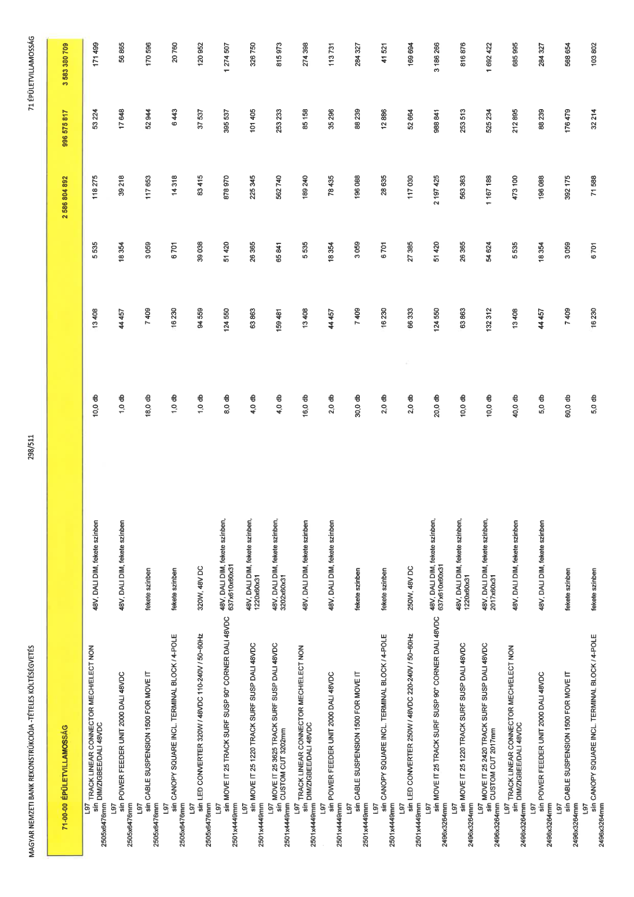

| Tétel | Menny. | Egys. | Anyag e.ár (net HUF) | Díj e.ár (net HUF) | Anyag összesen (net HUF) | Díj összesen (net HUF) | Anyag+Díj összesen (net HUF) |
|---|---|---|---|---|---|---|---|
| 71-00-00 ÉPÜLETVILLAMOSSÁG | NaN | NaN | 0 | 0 | 2 586 804 892 | 996 575 817 | 3 583 380 709 |
| 48V, DALI DIM, fekete színben | 0 | 0 | 0 | 0 | 0 | 0 | 0 |
| L97 sín TRACK LINEAR CONNECTOR MECH/ELECT NON DIM/ZIGBEE/DALI 48VDC 2505x6476mm | 10,0 | db | 13 408 | 5 535 | 118 275 | 53 224 | 171 499 |
| 48V, DALI DIM, fekete színben | 0 | 0 | 0 | 0 | 0 | 0 | 0 |
| L97 sín POWER FEEDER UNIT 2000 DALI 48VDC 2505x6476mm | 1,0 | db | 44 457 | 18 354 | 39 218 | 17 648 | 56 865 |
| fekete színben | 0 | 0 | 0 | 0 | 0 | 0 | 0 |
| L97 sín CABLE SUSPENSION 1500 FOR MOVE IT 2505x6476mm | 18,0 | db | 7 409 | 3 059 | 117 653 | 52 944 | 170 596 |
| fekete színben | 0 | 0 | 0 | 0 | 0 | 0 | 0 |
| L97 sín CANOPY SQUARE INCL TERMINAL BLOCK / 4-POLE 2505x6476mm | 1,0 | db | 16 230 | 6 701 | 14 318 | 6 443 | 20 760 |
| 320W, 48V DC | 0 | 0 | 0 | 0 | 0 | 0 | 0 |
| L97 sín LED CONVERTER 320W / 48VDC 110-240V / 50-60Hz 2505x6476mm | 1,0 | db | 94 559 | 39 038 | 83 415 | 37 537 | 120 952 |
| 48V, DALI DIM, fekete színben, 637x610x60x31 | 0 | 0 | 0 | 0 | 0 | 0 | 0 |
| L97 sín MOVE IT 25 TRACK SURF SUSP 90° CORNER DALI 48VDC 2501x4449mm | 8,0 | db | 124 550 | 51 420 | 878 970 | 395 537 | 1 274 507 |
| 48V, DALI DIM, fekete színben, 1220x60x31 | 0 | 0 | 0 | 0 | 0 | 0 | 0 |
| L97 sín MOVE IT 25 1220 TRACK SURF SUSP DALI 48VDC 2501x4449mm | 4,0 | db | 63 863 | 26 365 | 225 345 | 101 405 | 326 750 |
| 48V, DALI DIM, fekete színben, 3202x60x31 | 0 | 0 | 0 | 0 | 0 | 0 | 0 |
| L97 sín MOVE IT 25 3625 TRACK SURF SUSP DALI 48VDC CUSTOM CUT 3202mm 2501x4449mm | 4,0 | db | 159 481 | 65 841 | 562 740 | 253 233 | 815 973 |
| 48V, DALI DIM, fekete színben | 0 | 0 | 0 | 0 | 0 | 0 | 0 |
| L97 sín TRACK LINEAR CONNECTOR MECH/ELECT NON DIM/ZIGBEE/DALI 48VDC 2501x4449mm | 16,0 | db | 13 408 | 5 535 | 189 240 | 85 158 | 274 398 |
| 48V, DALI DIM, fekete színben | 0 | 0 | 0 | 0 | 0 | 0 | 0 |
| L97 sín POWER FEEDER UNIT 2000 DALI 48VDC 2501x4449mm | 2,0 | db | 44 457 | 18 354 | 78 435 | 35 296 | 113 731 |
| fekete színben | 0 | 0 | 0 | 0 | 0 | 0 | 0 |
| L97 sín CABLE SUSPENSION 1500 FOR MOVE IT 2501x4449mm | 30,0 | db | 7 409 | 3 059 | 196 088 | 88 239 | 284 327 |
| fekete színben | 0 | 0 | 0 | 0 | 0 | 0 | 0 |
| L97 sín CANOPY SQUARE INCL TERMINAL BLOCK / 4-POLE 2501x4449mm | 2,0 | db | 16 230 | 6 701 | 28 635 | 12 886 | 41 521 |
| 250W, 48V DC | 0 | 0 | 0 | 0 | 0 | 0 | 0 |
| L97 sín LED CONVERTER 250W / 48VDC 220-240V / 50-60Hz 2501x4449mm | 2,0 | db | 66 333 | 27 385 | 117 030 | 52 664 | 169 694 |
| 48V, DALI DIM, fekete színben, 637x610x60x31 | 0 | 0 | 0 | 0 | 0 | 0 | 0 |
| L97 sín MOVE IT 25 TRACK SURF SUSP 90° CORNER DALI 48VDC 2496x3264mm | 20,0 | db | 124 550 | 51 420 | 2 197 425 | 988 841 | 3 186 266 |
| 48V, DALI DIM, fekete színben, 1220x60x31 | 0 | 0 | 0 | 0 | 0 | 0 | 0 |
| L97 sín MOVE IT 25 1220 TRACK SURF SUSP DALI 48VDC 2496x3264mm | 10,0 | db | 63 863 | 26 365 | 563 363 | 253 513 | 816 876 |
| 48V, DALI DIM, fekete színben, 2017x60x31 | 0 | 0 | 0 | 0 | 0 | 0 | 0 |
| L97 sín MOVE IT 25 2420 TRACK SURF SUSP DALI 48VDC CUSTOM CUT 2017mm 2496x3264mm | 10,0 | db | 132 312 | 54 624 | 1 167 188 | 525 234 | 1 692 422 |
| 48V, DALI DIM, fekete színben | 0 | 0 | 0 | 0 | 0 | 0 | 0 |
| L97 sín TRACK LINEAR CONNECTOR MECH/ELECT NON DIM/ZIGBEE/DALI 48VDC 2496x3264mm | 40,0 | db | 13 408 | 5 535 | 473 100 | 212 895 | 685 995 |
| 48V, DALI DIM, fekete színben | 0 | 0 | 0 | 0 | 0 | 0 | 0 |
| L97 sín POWER FEEDER UNIT 2000 DALI 48VDC 2496x3264mm | 5,0 | db | 44 457 | 18 354 | 196 088 | 88 239 | 284 327 |
| fekete színben | 0 | 0 | 0 | 0 | 0 | 0 | 0 |
| L97 sín CABLE SUSPENSION 1500 FOR MOVE IT 2496x3264mm | 60,0 | db | 7 409 | 3 059 | 392 175 | 176 479 | 568 654 |
| fekete színben | 0 | 0 | 0 | 0 | 0 | 0 | 0 |
| L97 sín CANOPY SQUARE INCL TERMINAL BLOCK / 4-POLE 2496x3264mm | 5,0 | db | 16 230 | 6 701 | 71 588 | 32 214 | 103 802 |
